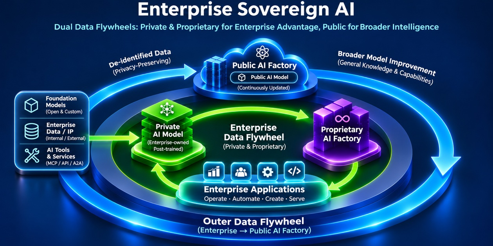
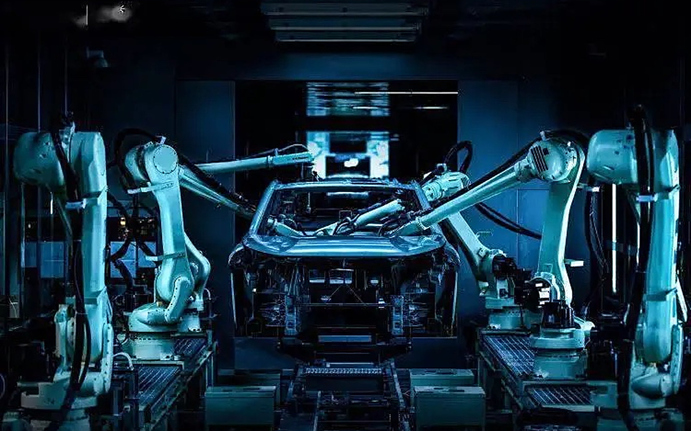

NVIDIA B300
提供中
8 GPU 構成の HGX B300 ノードで提供する Blackwell Ultra GPU です。
- メモリ
- 288GB HBM3e
- メモリ帯域
- 8TB/s
- 演算性能
- 15 PFLOPS NVFP4（dense）
- インターコネクト
- NVLink 5、1,800GB/s
- ノード
- 8 GPU HGX B300、合計 2.3TB HBM3e
日本で現在ご利用いただけるのは B300（Blackwell Ultra）と H200 です。どちらも日本のお客様向けに、国内窓口からご提供します。
提供中
8 GPU 構成の HGX B300 ノードで提供する Blackwell Ultra GPU です。
提供中
大容量・高速メモリを備えた Hopper 世代のフラッグシップ。LLM 推論と HPC の基盤として提供中です。
下記のモデルもラインナップしています。
パブリッククラウドの柔軟性と、企業専用環境のコントロールを両立。RunSun は GPU インフラの提供と運用を担い、企業は自社の AI モデルと事業に集中できます。
共有型サービスを中心に、幅広いモデルや計算資源へ迅速にアクセス。専用リソースやデータ管理条件はサービスごとに異なります。
専用環境 · 計画的な拡張 · マネージド運用
企業専用の GPU リソースと分離環境を RunSun が運用。容量拡張は利用可能なリソースと合意した納期・契約条件に基づいて計画できます。
専用構成を相談する自社所有設備による物理的な管理が可能。一方、増設には設備投資、電力、スペース、調達・設置期間が必要です。
専用環境でも即時・無制限の拡張を保証するものではありません。容量、リージョン、運用範囲、サービスレベルは個別契約で定義します。
パブリック AI の進化を活用しながら、企業固有のデータ・モデル・知的財産に対するコントロールを維持します。
The Elasticity of Public Cloud. The Sovereignty of Private AI.
Enterprise Sovereign AI は、パブリック AI の力を活用しながら、企業が自社独自のインテリジェンスを構築し、管理し、継続的に改善していくことを可能にします。
このアーキテクチャの中核にあるのが Proprietary AI Factory です。企業専用に設計された、専門的に運用管理され、弾力的に拡張可能な AI インフラストラクチャです。

企業専用 AI Factory の運用・拡張条件は契約で定義します。2つのデータフライホイールは、次のように機能します。
Enterprise Data Flywheel は、企業独自の業務データ、運用経験、アプリケーションからのフィードバックを、ポストトレーニングを通じて継続的に改善されるプライベート AI モデルへと変換します。専用の AI インフラに支えられ、企業の管理下にあり続ける、複利のように積み上がっていくインテリジェンスの優位性を生み出します。
Public Data Flywheel により、企業はパブリック AI モデルの進歩による恩恵を受けながら、許可された、プライバシーを保つデータと知見を選択的に、より広い AI エコシステムと共有できます。
2つのフライホイールが一体となることで、企業はパブリックなインテリジェンスの規模を活用しながら、自社独自の差別化された AI 能力を発展させることができます。
Own Your Intelligence. Scale Without Limits. Stay Sovereign.
Reserved と On-demand は同じオーケストレーションされた計算資源プールから提供されます。安定した負荷には確保を、変動する負荷には柔軟性をお選びいただけます。
固定価格・SLA 付きの安定供給。継続的なワークロード向けに 64〜10,000 GPU までご利用いただけます。ご契約時の料金は全期間固定で、当社がご提示できる最も有利なレートを適用します。
検証やバースト負荷に使える従量課金のアクセス。最大 200 GPU までご利用いただけます。
学習と推論のための GPU 計算資源。設定済みの ML スタックですぐに利用を開始できます。
コンテナ化した AI ワークロードを RunSun の GPU 上で実行できます。
データセット、チェックポイント、モデル成果物を計算資源の近くに保管できます。
ラック内は NVLink、クラスタ間は InfiniBand で接続します。
RunSun ドキュメントより、GPU クラウドを完成させるストレージ、ネットワーク、サポートの各サービスです。
最高性能の階層です。大規模 AI 学習、深層学習フレームワーク、AI データセンター、AI モデル推論のために設計されています。
AI データパイプライン向けのスケーラブルな AI データストレージ。モデルのバージョン管理とキャッシュに対応します。
AI の実験とプロトタイピング、AI モデルのデプロイ、共同 AI 開発のための日常的な分散ストレージです。
GPU クラウド向けの、専用の高帯域接続です。
インスタンス向けに、パブリック IP アドレスを持つマネージド NAT を提供します。
GPU クラウドコンピューティングサービス向けの Elastic IP アドレス。デプロイの変更に合わせて付け替えできます。
多様な GPU インスタンスタイプをオンデマンドで起動できます。1x、2x、4x、8x GPU のインスタンスを、ジョブに合わせてお選びください。
GPU 計算資源に加えて、RunSun はフル機能のプライベートクラウドを提供します。弾性コンピューティング、コンテナ、ストレージ、ネットワーク、セキュリティ、データベースを、同一プラットフォーム上でご利用いただけます。
プライベートクラウドの日常的な計算基盤です。一般的なワークロード向けの仮想マシン、マシン全体を専有したい場合のベアメタル、HPC と AI ジョブ向けのマネージドサービスを用意しています。イメージ、SSH キー、配置はお客様ご自身で管理でき、1台からクラスタ全体まで拡張できます。
コントロールプレーンの運用を自前で抱えることなく、コンテナワークロードを実行できます。ノード管理を省けるサーバーレスな選択肢を含むマネージド Kubernetes と、プライベートなコンテナレジストリで、AI パイプラインからマイクロサービスまで対応します。
データの温度ごとに選べるストレージです。稼働中ワークロード向けの高速ブロック／SSD、共有データセットやモデル成果物向けのファイルストレージと S3 互換 API のオブジェクトストレージ、滅多に触らないが保管が必要なデータ向けの低コストアーカイブを、バックアップと CDN 配信まで同一プラットフォームで提供します。
RunSun 内に専用の仮想ネットワークを持ち、到達するためのゲートウェイとアドレスを用意します。さらに VPN、専用線、クラウドエクスプレス接続でお客様のデータセンターや他のクラウドとプライベートに接続し、GPU 計算資源を自社ネットワークの一部のように扱えます。
後付けではなく、プラットフォームの周囲に層として備えた保護です。エッジでの基本保護とフォートレスゲートウェイ、攻撃への侵入防止と DDoS ブラックホール、ワークロードとデータベースを監査可能に保つスキャンと監査サービスを組み合わせます。
アプリケーションチームが自前で運用しなくて済むマネージドデータベースです。トランザクション向けのリレーショナルデータベース、インメモリで高速な Redis、自動バックアップとリカバリを用意します。
GPU クラスタとストレージから、モデル、業界アプリケーションまで、4つのレイヤーを1つのプラットフォームで提供します。下図はプラットフォーム自体のフルスタック構成図です。

下から読む構成です。IaaS は物理的な基盤 ― GPU クラスタ、ベアメタル、階層型のファイル／オブジェクト／ベクトルストレージ。PaaS はそれを稼働させ続けます ― Kubernetes と HPC スケジューリングを備えた AI Cluster、Operator 群とコンパイラのツールチェーン、課金・IAM・監視。MaaS はモデルを働かせます ― 主要なオープンソースフレームワークの上でのモデル・ワークフロー管理。SaaS は到達点 ― ユーザーが実際に触れる業界・商用アプリケーションです。1つのスタックを1つのプラットフォームとして、1ノードから数千ノードまで管理します。
チームの最初のログインから、学習済みモデルと稼働する推論まで ― すべてのワークロードが RunSun でたどる道筋です。
エンジニア、研究者、そして彼らが作るアプリケーション ― プラットフォームが支える人とワークロードです。
1つのコンソールと API で、クラスタの払い出し、イメージとキーの管理、ジョブの起動を行います。
IAM、課金、監視が土台として動き、Kubernetes と HPC（Slurm）がすべてのジョブをスケジューリングします。
ジョブは RunSun の GPU クラスタ ― Vera Rubin、B300、H200 ― で実行されます。
学習済みモデル、提供される推論、レンダリング結果が、お客様のプロダクトとユーザーへ届きます。
RunSun の GPU 計算資源の上位には、LLM トークンの統合ゲートウェイ兼マーケットプレイス Token Engine があります。
https://api.rstoken.ai/v1以下は RunSun の GPU インフラが対応できる代表的な業界ユースケースです。個別の導入実績を示すものではありません。

AI 研究開発企業・プロダクトチーム向け
AI スタートアップにとって、学習のカレンダーこそがプロダクトのロードマップです。事前学習、ファインチューニング、評価のジョブが、次のモデルの出荷時期を決めます。RunSun はハードウェアを買わずにクラスタ規模の計算資源を提供します。学習時は大きく拡張し、ローンチ時は安定した推論容量を確保し、アプリケーション開発そのものも同じプラットフォームで行えます。

自治体および関連企業向け
都市のシステムは、眠らない推論ワークを生み続けます。解析すべきカメラネットワーク、処理すべき IoT テレメトリ、リアルタイムで把握すべき交通。映像・画像解析、IoT とデータ分析、スマート交通のワークロードを、自治体とその構築を担う企業に RunSun の GPU 計算資源が支えます。

生産・製造企業向け
工場はシミュレーションの問題になりつつあります。生産ラインのデジタルツイン、全数を検査するビジョンモデル、自ら再計画する物流。デジタルツインシミュレーション、工業検査・品質検査、スマート物流、設備メンテナンス分析など、GPU のスループットが効く計算集約型ワークロードを RunSun で実行できます。

EC、ゲーム、コンテンツプラットフォーム向け
コンシューマー向けインターネットは、再学習し続けるモデルと、オンデマンドで描かれるメディアの上に成り立っています。レコメンデーションエンジン、デジタルヒューマン、仮想世界。EC、ゲーム、コンテンツのプラットフォームが、AI レコメンデーション、デジタルヒューマン生成、メタバースレンダリングを RunSun で実行します。需要の急増が日常であるワークロードです。
金融機関、証券会社、プライベートエクイティ、投資ファンド向け
金融のワークロードは二つに分かれます。クオンツ分析、バックテスト、投資アルゴリズム研究など計算資源を食うリサーチと、取引をリアルタイムにスコアリングする不正検知やリスク管理など、瞬きもできない本番システムです。両方を、機微なデータに必要な分離された環境の中で RunSun で実行できます。
大学・研究機関向け
大学に必要な計算資源は二種類あります。学期に合わせて柔軟に増減する教育用と、締め切りに間に合わせる研究用です。AI 教育と実践、深層学習・アクセラレーテッドコンピューティング・データサイエンスの研究を、1つのコースの実習室から機関規模のクラスタまで RunSun が支えます。

広告主、建築設計機関向け
デザインの仕事はレンダリングの仕事です。反復できる速さで返ってこなければならないシーン、ウォークスルー、生成されたコンセプト。グラフィックスレンダリング、AIGC デザインプラットフォーム、GPU デスクトップ VDI を RunSun で提供し、分散したチームが1つのハイエンドワークステーションプールを共有できます。

製薬・バイオ企業向け
現代の生物学は計算のパイプラインです。アライメントすべきシーケンスデータ、シミュレーションで折りたたむタンパク質構造、実験台に上がる前にスクリーニングする分子ライブラリ。遺伝子シーケンス解析、タンパク質折りたたみシミュレーション、低分子スクリーニングを、製薬・バイオ企業が RunSun の GPU クラスタで実行します。
| モデル | 状態 | On-demand（GPU 1基/時間） | Reserved 12か月（GPU 1基/時間） |
|---|---|---|---|
| NVIDIA B300 | 要確認 | $8.90 | $5.90 |
| NVIDIA H200 | 提供中 | $4.90 | $3.90 |
| NVIDIA Vera Rubin | 予約受付中 | 2027年Q2提供開始（価格は未定） | |
表示価格は参考料金（USD、税別）です。Reserved は12か月契約を想定。構成、地域、ネットワーク、ストレージ、最小購入単位、提供時期はお見積もりで確定します。
RunSun はシンガポール、米国、タイ、日本に事業・サポート拠点を展開しています。これらはすべてが同一条件で GPU を提供するデータセンター所在地を意味するものではありません。GPU の配置先、在庫、データ所在地、納期は案件ごとに確認します。
グループ本社・東南アジア事業窓口。
米州向けの事業・導入相談窓口。
東南アジアにおける AI Factory 事業・計画拠点。
日本語での営業・導入相談・サポート窓口。GPU の提供条件と配置先は個別にご案内します。
RUNSUN CLOUD AI 株式会社
東京都千代田区丸の内二丁目5番2号 三菱ビル9階
お問い合わせから稼働開始まで、3つのステップで進みます。
ご希望のGPUモデル、規模、ワークロードの概要を、下記のフォームからお送りください。
ご要件に合わせた構成とお見積もりをご提示します。安定した需要には Reserved、柔軟性には On-demand をご用意します。
ご契約後、容量を準備・導入し、RunSun 上でワークロードの稼働を開始します。
RunSun は、AI 時代のために構築されたクラウドコンピューティングのサービスプロバイダーです。先進的で弾力性のある計算資源をお客様ごとにカスタマイズして提供し、生成 AI、自動運転、ゲノミクス、レンダリング、スマート製造など急成長する AI ワークロードを、複数の深層学習フレームワークとモデルホスティングで支えます。テクノロジー主導・顧客中心の RunSun は、業界をリードする AI インフラを基盤に、AI 革命がもたらす可能性とビジネスの実際のニーズとの間をつなぎます。

NVIDIA の各世代を、登場に合わせて提供します。B300 と H200 は本日提供中で、次世代プラットフォーム Vera Rubin は 2027年Q2 の提供開始に向けて既に予約受付中です。ハードウェアのロードマップが、単一の製品サイクルに縛られることはありません。

GPU サーバー、ネットワーク、階層型ストレージ、セキュリティは、NVIDIA 自身がプラットフォーム検証に用いるリファレンスアーキテクチャに沿って導入します。その設計に合わせることが、モデルやフレームワークの進化の中でも互換性と持続可能性を保ちます。

お客様のクラスタは、RunSun が自社開発し8年以上磨いてきた独自クラウドプラットフォームの上で、専用・分離された環境で稼働します。GPU クラスタとストレージをテナントごとに分離することが、セキュリティとパフォーマンスの両立につながります。

標準プラットフォームの上に、ワークロードに合わせた形で計算資源を提供します。構成、期間、提供モデルをジョブに合わせ、ログイン情報を渡すだけではない、導入のチューニングまで担うエンジニアが支援する、競争力のあるテーラーメイドのサービスです。

RunSun は NVIDIA と提携し、AI を開発するお客様にアクセラレーテッドコンピューティング基盤を提供しています。
Reserved の計算資源、B300・H200 の提供状況、Vera Rubin のご予約について、お気軽にご相談ください。
RUNSUN CLOUD AI 株式会社 · 東京都千代田区丸の内二丁目5番2号三菱ビル９階
COMPANY
| 商号 | RUNSUN CLOUD AI株式会社 |
|---|---|
| 本社所在地 | 東京都千代田区丸の内二丁目5番2号三菱ビル９階 |
| 代表者 | 黒木 明 |
| 設立 | 2025年1月30日 |
| 資本金 | 1,000万円 |
| 事業内容 | 1.クラウドインフラの設計、構築、運用管理 2.クラウドプラットフォームの販売及び導入支援 3.クラウド移行サービス及びクラウドネイティブアプリケーションの開発 4.AIアルゴリズムとモデルの開発 5.データ分析及び機械学習モデルの構築と運用 6.AIを活用した自動化及び最適化ソリューションの提供 7.ハイパフォーマンスコンピューティング（HPC）サービスの提供 8.エッジコンピューティング及び分散コンピューティングの導入 9.コンピュータネットワークとデータセンターの設計及び管理 10.ITインフラの評価と最適化のコンサルティング 11.サイバーセキュリティ対策とリスク管理 12.システムインテグレーション及びプロジェクト管理サービス 13.BtoB及びBtoCの販売戦略策定と実行 14.デジタルマーケティング及びブランディング 15.顧客サポートとアフターサービスの提供 16.前各号に附帯する一切の業務 |
CONTACT
東京都千代田区丸の内二丁目5番2号三菱ビル９階